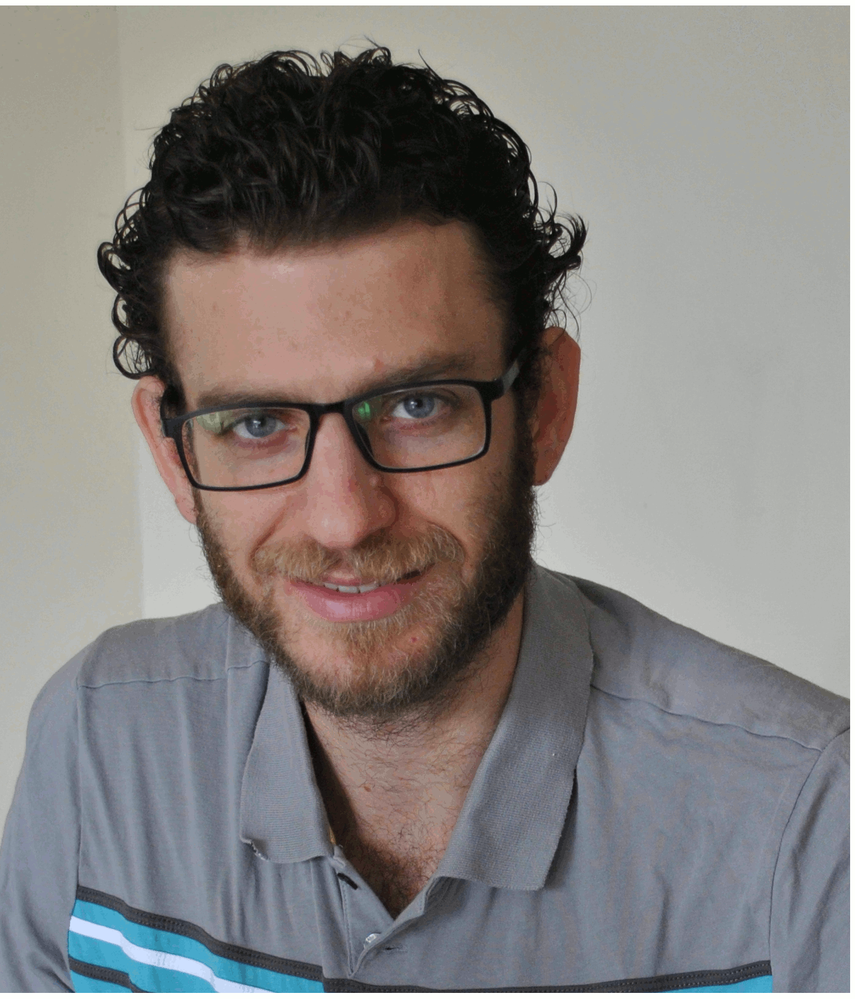

Contact me
mszyld@dal.ca,
Research Interests
- Category theory and its applications. In particular the extension to higher category
theory of basic categorical concepts and results.
- 2-dimensional category theory, in particular bicategories and double categories.
- Representation theory. In particular Galois and Tannaka theories, especially for topos.
Events
2021, Categories and Topology, Special session at Mathematical Congress of the Americas,
Schedule and abstracts,
videos of the talks. Co-organized with Eduardo Dubuc and Dorette Pronk.
Publications
- 2022, Model bicategories and their homotopy bicategories (joint with Descotte M.E. and Dubuc E. J.),
Advances In Mathematics 404. arXiv:1805.07749.
- 2020, A localization of bicategories via homotopies (joint with Descotte M.E. and Dubuc E. J.),
Theory and Applications of Categories
35, 23, p.845-874. arXiv: 1805.05248.
- 2019, Lifting PIE limits with strict projections,
Theory and Applications of Categories
34, 1, p.1-12.
arXiv: 1809.04712.
|

|